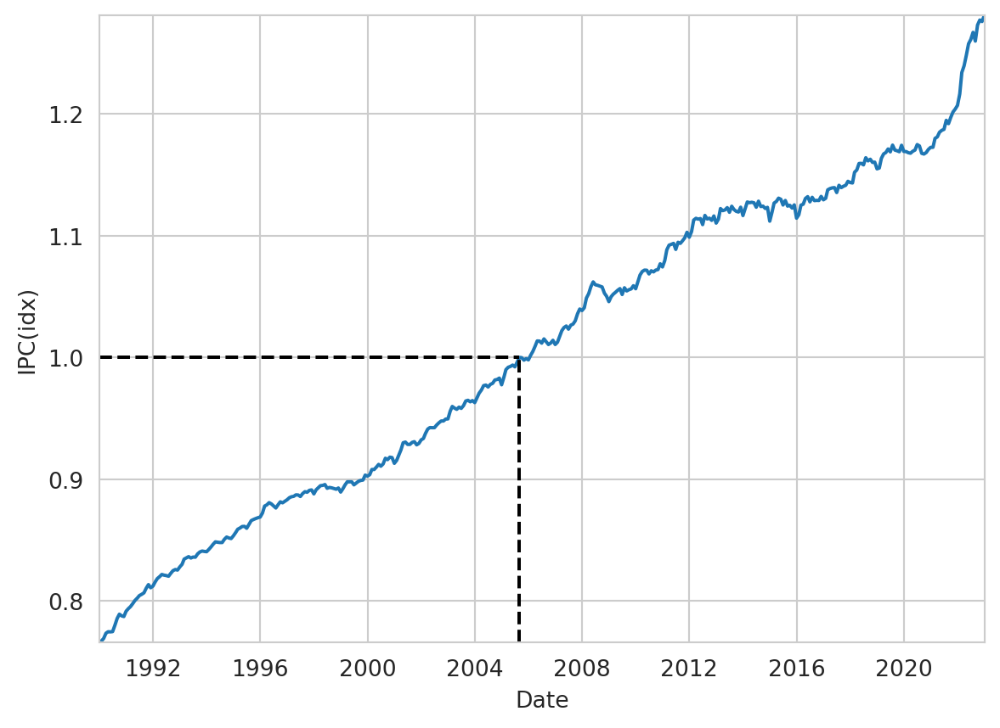
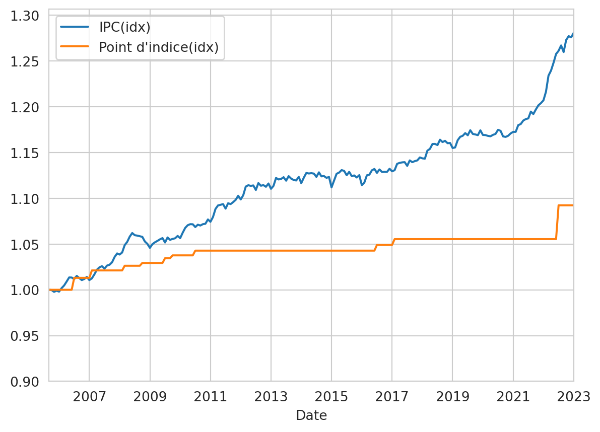
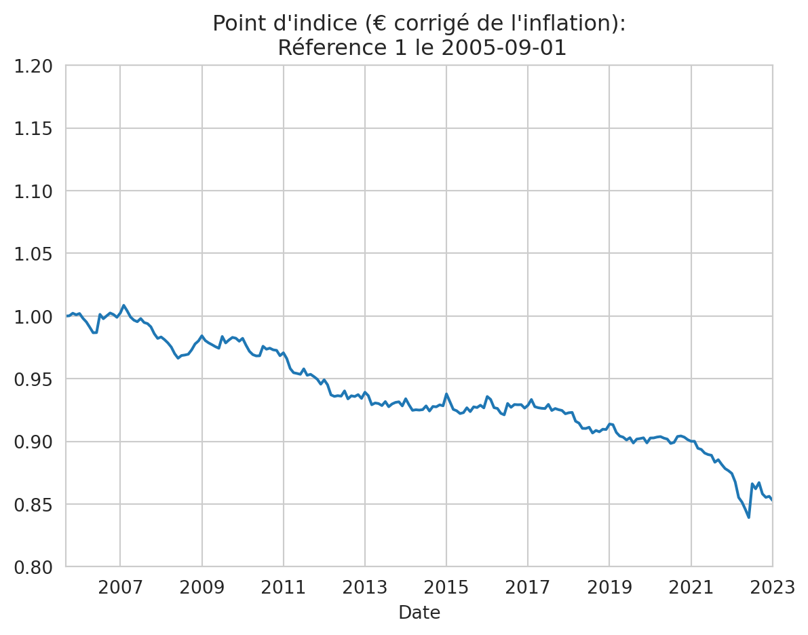

import pandas as pd
import seaborn as sns
import matplotlib.pylab as plt
import numpy as np
sns.set_style("whitegrid")
# %%
# Source: # https://www.insee.fr/fr/statistiques/serie/001763852
df_ipc = pd.read_csv("valeurs_mensuelles.csv", skiprows=6, sep=";")
# df_point_indice = pd.read_csv("point_indice.csv")
# %%
df_ipc.columns = ["Date", "IPC", "Useless", "Date2"]
df_ipc.index = pd.to_datetime(df_ipc["Date"], format="%Y-%m")
df_ipc.drop(df_ipc.columns[[0, 2]], inplace=True, axis=1)
df_ipc.head()
# %%
# set origin
init_date = "2005-09-01"
df_ipc["IPC(idx)"] = df_ipc["IPC"] / df_ipc.loc[init_date]["IPC"]
df_ipc.head()
# sort by "Date" in ascending order
df_ipc.sort_values(by="Date", inplace=True)
# %%
sns.lineplot(x=df_ipc.index, y="IPC(idx)", data=df_ipc)
ax = plt.gca()
ax.vlines(
np.datetime64(init_date),
ymin=np.min(df_ipc["IPC(idx)"]),
ymax=1.0,
color="k",
linestyle="--",
)
ax.hlines(
1.0,
xmin=df_ipc["IPC"].idxmin(),
xmax=np.datetime64(init_date),
color="k",
linestyle="--",
)
ax.set_xlim(df_ipc["IPC"].idxmin(), df_ipc["IPC"].idxmax())
ax.set_ylim(df_ipc["IPC(idx)"].min(), df_ipc["IPC(idx)"].max())
# %%
df_pt_idx = pd.read_csv("point_indice.csv", skiprows=1, sep=",")
df_pt_idx.columns = ["Date", "Point d'indice"]
# %%
df_pt_idx["Date"] = pd.to_datetime(df_pt_idx["Date"], format="%d/%m/%Y")
# df_pt_idx["Point d'indice(idx)"] =df_pt_idx["Point d'indice"]/ df_pt_idx.loc[init_date]["IPC"]
# df_pt_idx.head()
# %%
df = pd.merge_asof(df_ipc, df_pt_idx, on="Date")
df.index = df["Date"]
df.loc[init_date]["Point d'indice"]
df["Point d'indice(idx)"] = (
df["Point d'indice"] / df.loc[init_date]["Point d'indice"]
)
df["Point d'indice(euros constant)"] = (
df["Point d'indice(idx)"] / df["IPC(idx)"]
)
# df_pt_idx.merge(df_ipc, left_index=True, right_index=True, how='inner')
# %%
df.plot(x="Date", y=["IPC(idx)", "Point d'indice(idx)"])
ax = plt.gca()
ax.set_xlim(left=np.datetime64(init_date))
ax.set_ylim(bottom=0.9)
fig = ax.get_figure()
fig.savefig("./svg/ipc_n_point_indice.svg")
fig.savefig("./png/ipc_n_point_indice.png")
plt.show()
plt.close("all")
# %%
df.plot(
x="Date",
y=["Point d'indice(euros constant)"],
title="Point d'indice (€ corrigé de l'inflation):\n Réference 1 le "
+ init_date,
)
ax = plt.gca()
ax.set_xlim(left=np.datetime64(init_date))
ax.set_ylim(bottom=0.80, top=1.2)
ax.legend().remove()
fig = ax.get_figure()
fig.savefig("./svg/point_indice.svg")
fig.savefig("./png/point_indice.png")

